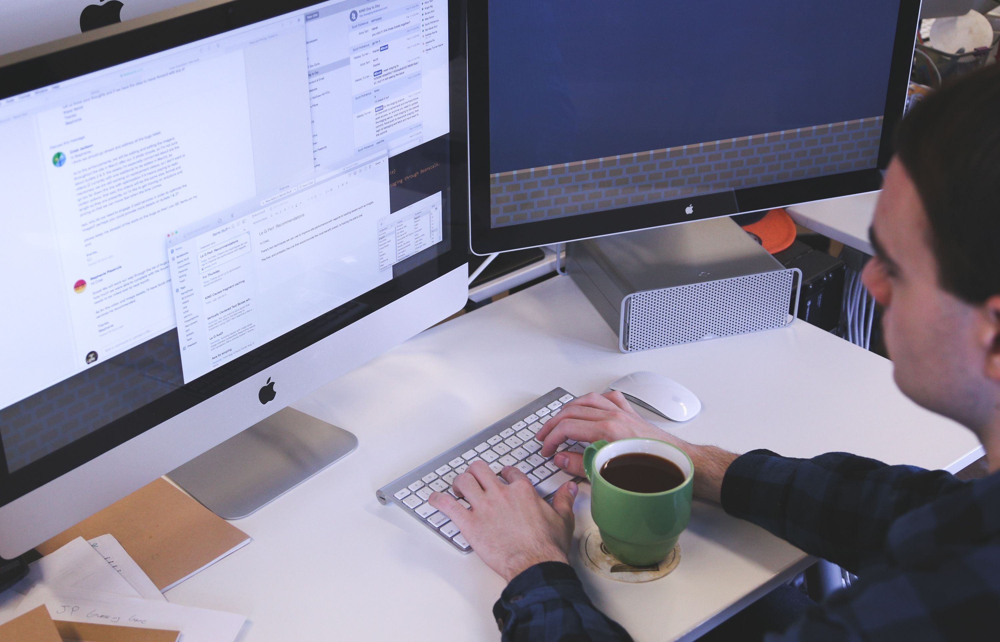

Bienvenidos
El Estudio Contable muestra una sinergia propia de un grupo de profesionales jóvenes que trabaja diariamente para asistir, respaldar y acompañar cada etapa económica de nuestros clientes. Somos un equipo de personas que propugna por el progreso personal y grupal, en consonancia con los valores de la integridad, responsabilidad y ética.